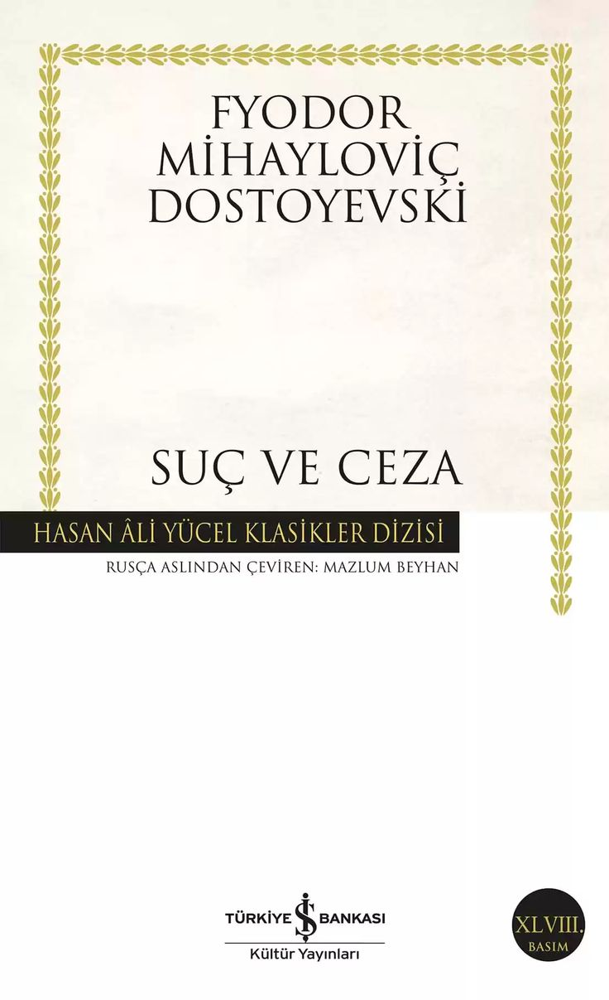
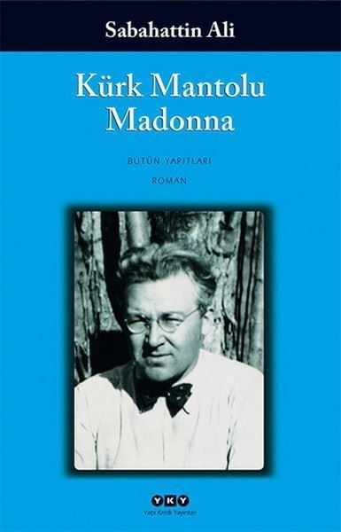
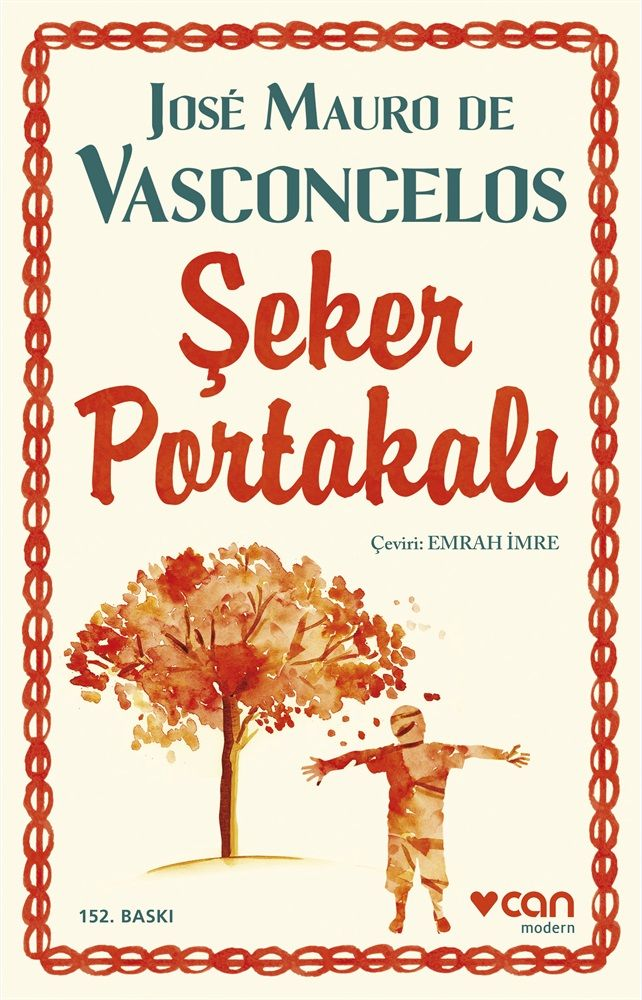
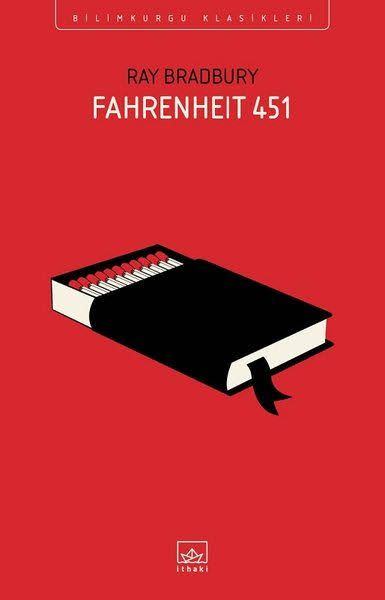
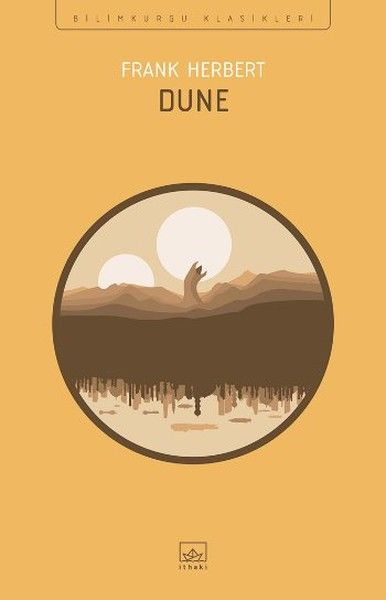
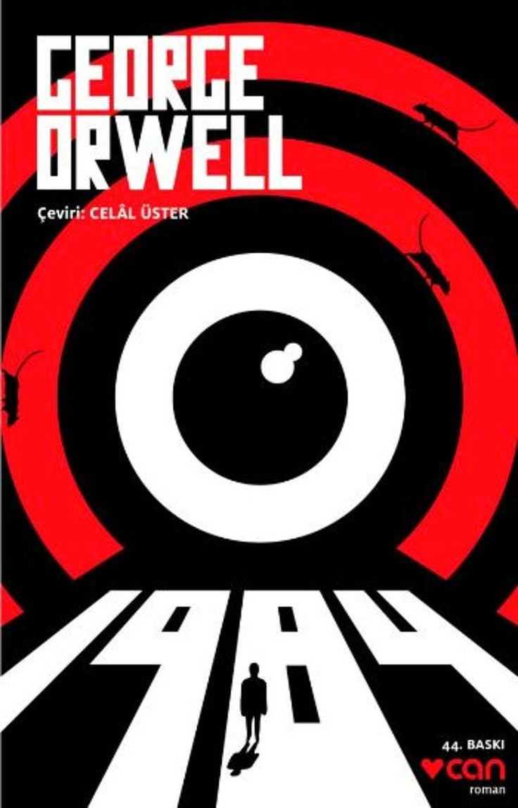
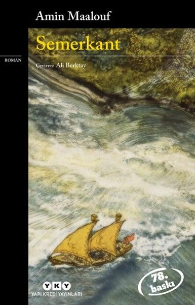

ROMAN/KLASİK
 |
Suç ve Ceza |
|
| Fyodor Dostoyevski | 1970 yapımı Kulidzhanov adlı uyarlaması vardır. | |
| Ahlak, vicdan ve pişmanlık temalarını işleyen psikolojik roman klasiği. | ||
 |
Kürk Mantolu Madonna |
|
| Sabahattin Ali | ||
| Raif Efendi ile Maria Puder arasındaki derin ve hüzünlü aşkı konu alır. | ||
 |
Şeker Portakalı |
|
| José Mauro de Vasconcelos | 2012 yapımı Meu Pé de Laranja Lima adlı uyarlaması vardır. İzlemek için tıklayın. |
|
| Zezé adlı küçük bir çocuğun hayal gücü ve acılarla dolu dünyası. | ||
BİLİM KURGU/DİSTOPYA
 |
Fahrenheit 451 |
|
| Ray Bradbury | ||
| Kitapların yasaklandığı ve itfaiyecilerin kitap yaktığı bir gelecek. | ||
 |
Dune |
|
| Frank Herbert | 2021 yapımı Dune: Part One adlı uyarlaması vardır. İzlemek için tıklayın. |
|
| Arrakis gezegenindeki politik güç mücadelelerini ve Paul Atreides'in hikayesini anlatır. | ||
 |
1984 |
|
| George Orwell | 1984 yapımı Nineteen Eighty-Four adlı uyarlaması vardır. İzlemek için tıklayın. |
|
| Büyük Birader'in her şeyi gözetlediği baskıcı bir distopya dünyası. | ||
TARİH VE GİZEM
 |
Da Vinci Şifresi |
|
| Dan Brown | 2006 yapımı The Da Vinci Code adlı uyarlaması vardır. İzlemek için tıklayın. |
|
| Simgebilimci Robert Langdon'ın Paris'te başlayan gizemli cinayeti çözme macerası. | ||
 |
Semerkant |
|
| Amin Maalouf | ||
| Ömer Hayyam’ın Rubaiyat el yazmasının tarihi serüveni ve Doğu dünyası. | ||